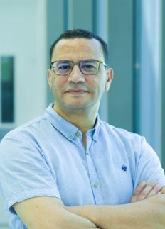
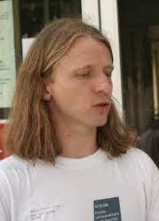
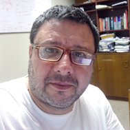
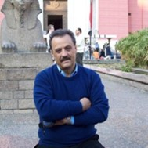
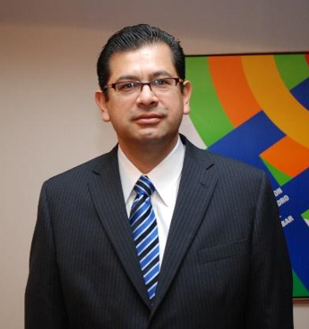
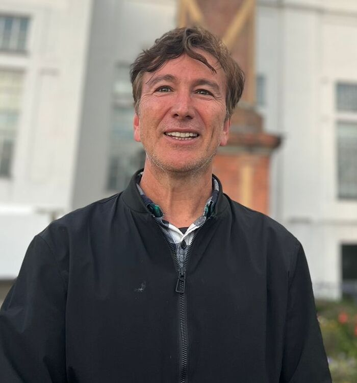
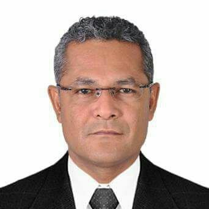
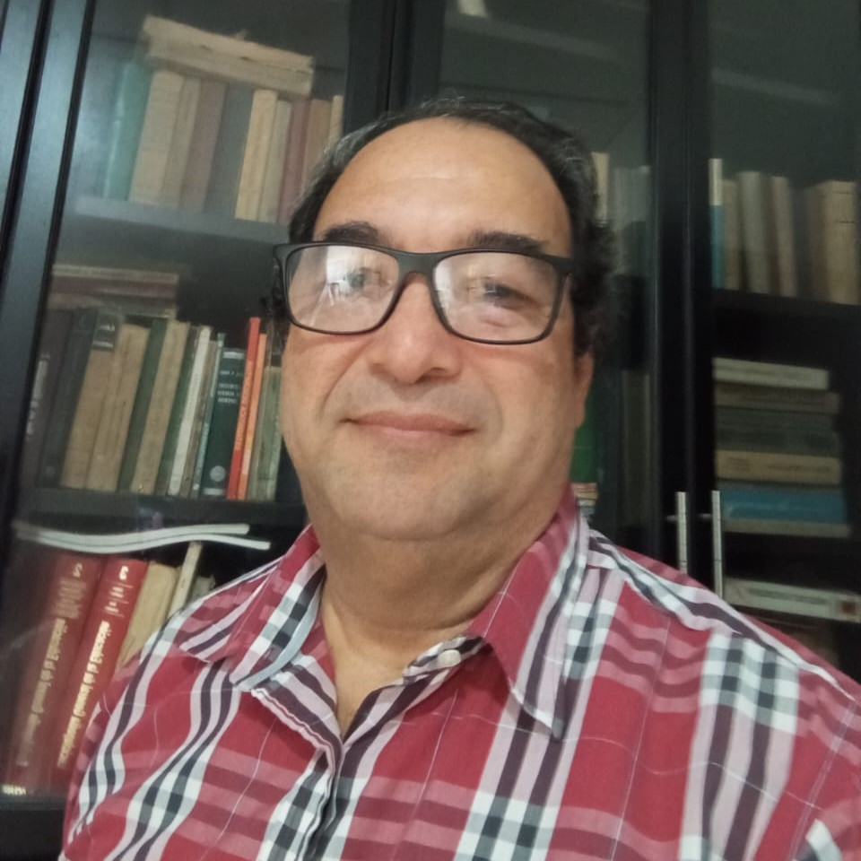
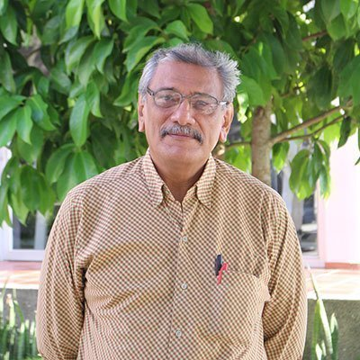

Internacionales

Conferencia 1
Kais Feki. University of Sfax, Tunisia

Conferencia 2
Elmar Wagner. Universidad Michoacana de San Nicolás de Hidalgo, México

Conferencia 3
Marco Mora Cofre. Universidad Católica del Maule, Chile

Conferencia 4
Pietro Aiena. Università degli Studi di Palermo, Italia

Conferencia 5
Wilson Zuñiga Galindo. University of Texas Rio Grande Valley, Estados Unidos
Conferencia 6
Xiao, Jun Yang. China University of Mining and Technology
Nacionales

Conferencia 7
Julio Cesar Ramos Fernández. Universidad Distrital Francisco José de Caldas

Conferencia 8
Rafael Galeano Andrade. Universidad de Cartagena

Conferencia 9
Boris Lora Castro. Universidad del Atlántico

Conferencia 10
Abelardo Arrieta Universidad Pontificia Bolivariana